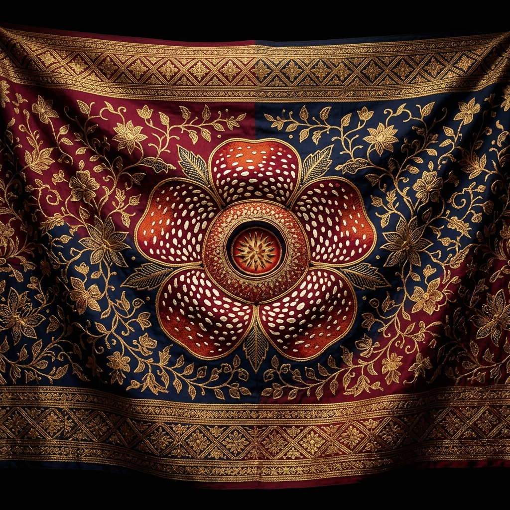
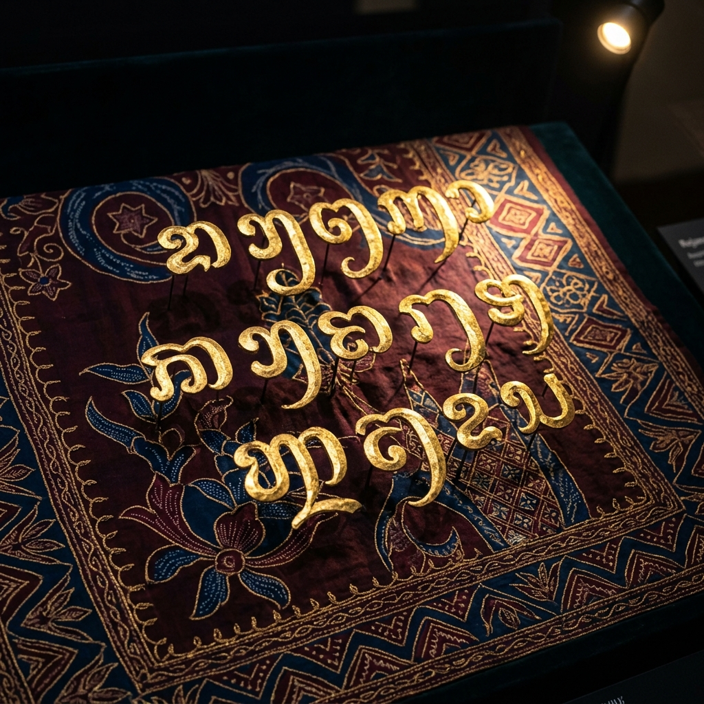
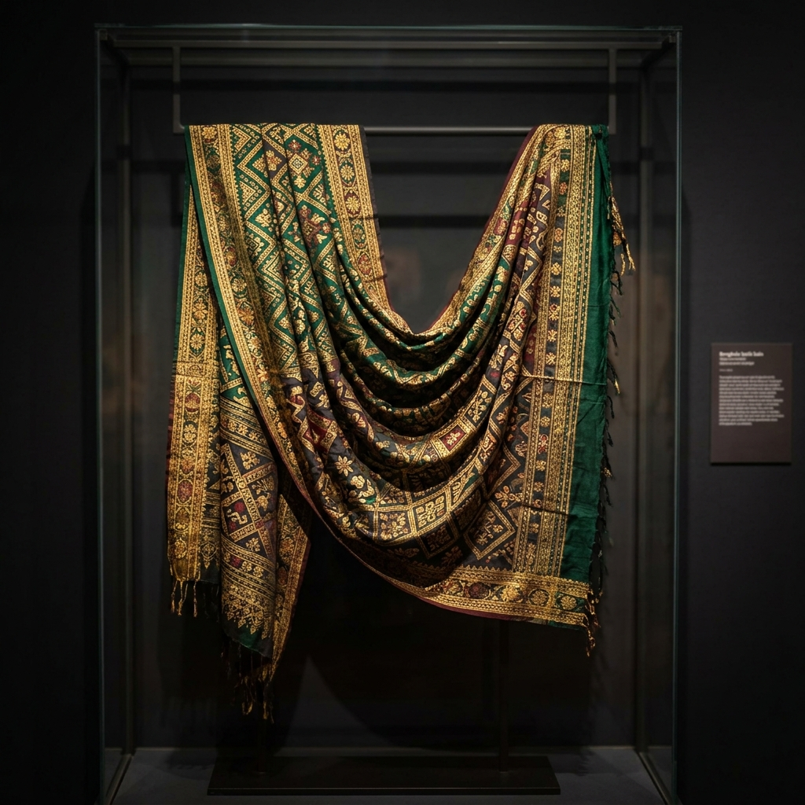
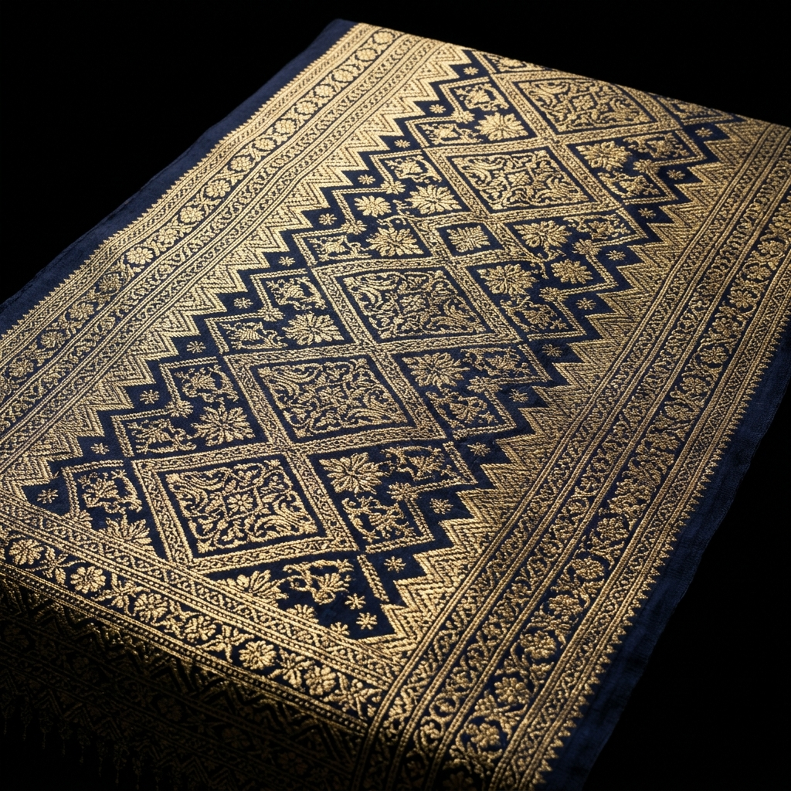

Museum Digital InteraktiF
Digitalisasi Aksara Kaganga — Menjembatani Warisan Abad ke-4 dengan Teknologi Abad ke-21
Koleksi lengkap aksara kuno Rejang dari tanah Bengkulu. Sentuh setiap aksara untuk mempelajari cara bacanya.
Perjalanan panjang Aksara Kaganga melintasi masa
Aksara Kaganga dipercaya berasal dari keluarga aksara Brahmi yang menyebar ke Nusantara melalui jalur perdagangan India. Aksara ini berkembang di tanah Rejang, Bengkulu, menjadi sistem tulisan yang unik dan khas.
Pada masa kerajaan Rejang, aksara Kaganga digunakan secara luas pada kulit kayu, tanduk kerbau, dan bambu. Aksara ini menjadi media komunikasi, hukum adat, dan sastra yang mengikat masyarakat Rejang.
Melalui proyek DIAGA, Aksara Kaganga dihidupkan kembali secara digital. Teknologi modern memungkinkan generasi baru mengenal, mempelajari, dan melestarikan warisan budaya tak benda ini tanpa batas ruang dan waktu.
Ketik teks Latin dan saksikan transformasi ke Aksara Kaganga secara langsung
Jelajahi keindahan batik tradisional Bengkulu dalam format digital beresolusi tinggi

Motif bunga Rafflesia Arnoldii yang menjadi ikon flora Bengkulu, dipadukan dengan ornamen tradisional Rejang.

Aksara Kaganga bertinta emas di atas kain sutra biru tua — perpaduan seni kaligrafi dan seni tekstil Bengkulu.

Kain songket seremonial dengan benang emas yang digunakan dalam upacara adat masyarakat Rejang.

Songket tradisional dengan motif geometris khas Bengkulu yang ditenun menggunakan teknik turun-temurun.